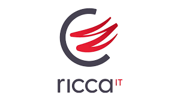

L'ascesa tecnologica nel cuore del Mediterraneo
Ricca IT, con sede principale a Ragusa, rappresenta oggi uno dei casi di successo più emblematici del panorama digitale italiano. Lontana dai tradizionali poli tecnologici del Nord, l’azienda ha saputo trasformare la propria posizione geografica in un punto di forza, diventando un punto di riferimento per la realizzazione di sistemi informativi complessi, data center e soluzioni di cybersicurezza. Sotto la guida del CEO Stefano Ricca, la società ha chiuso il 2025 con indicatori in forte crescita, superando i 40 milioni di euro di fatturato e consolidando un organico di oltre 110 specialisti. La missione dell'azienda si focalizza ora sul 2026, anno in cui l'obiettivo principale è la trasformazione della sicurezza informatica da semplice "scudo" a vero e proprio percorso di resilienza continua, integrando l'intelligenza artificiale per prevenire minacce sempre più sofisticate.

Focus: Cybersecurity e Intelligenza Artificiale come asset strategici
Il cuore pulsante dell'offerta di Ricca IT per il biennio 2025-2026 risiede nella capacità di fondere la cybersecurity con gli algoritmi di machine learning. Secondo la visione aziendale, la difesa digitale non può più essere considerata un comparto isolato, ma deve permeare ogni fibra dell'infrastruttura IT. L'azienda ha recentemente potenziato il proprio Innovation Center, un polo dedicato alla ricerca e sviluppo dove vengono testate soluzioni di malware polimorfico e sistemi anti-frode. L'ingresso nel Consiglio di Amministrazione di figure di rilievo come Alessandro de Bartolo segna un cambio di passo verso una visione d'impresa sempre più strutturata, capace di attrarre investimenti e competenze da tutto il territorio nazionale per sostenere progetti di smart cities e digitalizzazione industriale.
Oltre alla pura componente tecnica, il "modello Ricca" si distingue per il forte investimento nel capitale umano. L'iniziativa Hack Your Talent, giunta a un'edizione record nel 2026, testimonia la volontà di creare un ponte solido tra il mondo della scuola e l'impresa. Attraverso competizioni e premi per progetti innovativi — che spaziano dagli occhiali intelligenti per l'Alzheimer ai sistemi di riduzione degli sprechi idrici — Ricca IT non si limita a vendere servizi, ma coltiva attivamente l'ecosistema dell'innovazione locale, dimostrando che l'eccellenza tecnologica può fiorire ovunque ci sia una visione lungimirante e un forte senso di responsabilità sociale.
Indicatori di Crescita e Sostenibilità
| Indicatore | Risultato 2024 | Previsione / Target 2025-2026 |
|---|---|---|
| Fatturato Totale | € 30,3 Milioni | > € 40 Milioni |
| Numero Dipendenti | ~ 100 | > 120 |
| Investimento R&D | 8% del fatturato | 12% del fatturato |
| Rating ESG | In fase di certificazione | Integrazione completa sostenibilità |
Un esempio di resilienza e visione
In conclusione, Ricca IT si conferma come un pilastro fondamentale dell'innovazione Made in Italy, capace di competere a livelli altissimi grazie a un mix equilibrato di competenze tecniche e sensibilità umana. La capacità di scalare il mercato nazionale partendo da Ragusa è la prova che la trasformazione digitale non conosce confini geografici se supportata da una solida cultura del lavoro e da investimenti costanti in ricerca. A mio giudizio, il vero valore aggiunto dell'azienda non risiede solo nei suoi prodotti software, ma nella capacità di generare valore territoriale, trattenendo i talenti e offrendo soluzioni di sicurezza che sono ormai indispensabili per la sopravvivenza di qualsiasi organizzazione moderna. Il futuro di Ricca IT dipenderà ora dalla capacità di mantenere questa agilità decisionale anche di fronte a una crescita dimensionale così rapida.